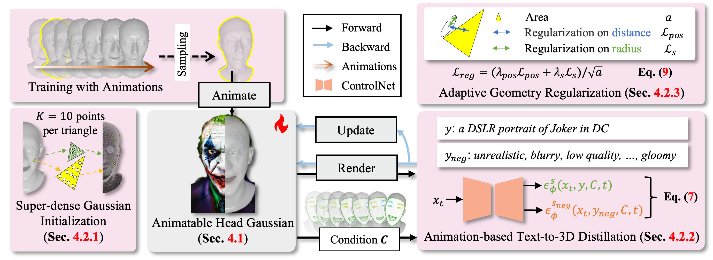

HeadStudio: Text to Animatable Head Avatars
with 3D Gaussian Splatting
ECCV 2024
Zhenglin Zhou, Fan Ma, Hehe Fan, Zongxin Yang, Yi Yang✉
ReLER, CCAI, Zhejiang University
Video
Method Overview
Framework of HeadStudio, which integrates animatable head prior model into 3D Gaussian splatting and score distillation sampling. 1) Animatable Head Gaussian: each 3D point is rigged to a mesh, and then rotated, scaled, and translated by the mesh deformation. 2) Text to Avatar Optimization: enhance the optimization from initialization, distillation and regularization, including: super-dense Gaussian initialization, animation-based text-to-3D distillation, and adaptive geometry regularization.
Text to Static Avatar Generation
Comparison with the text to static avatar generation methods. HeadStudio excels at producing high-fidelity head avatars, yielding superior results.
Text to Dynamic Avatar Generation
Comparison with the text to dynamic avatar generation methods. HeadStudio provides effective semantic alignment, smooth expression deformation, and real-time rendering.
Easter Egg
Citation
@article{zhou2024headstudio,
author = {Zhenglin Zhou and Fan Ma and Hehe Fan and Zongxin Yang and Yi Yang},
title = {HeadStudio: Text to Animatable Head Avatars with 3D Gaussian Splatting},
journal={ECCV},
year={2024}
}